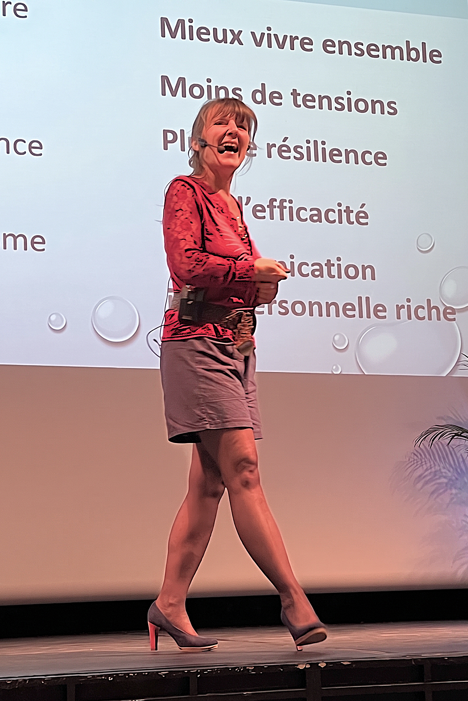

✦ Deux portes d'entrée
Une approche centrée sur la résilience et la durabilité humaine : nous ne vendons pas du bien-être gadget, nous déployons la vitalité organisationnelle à travers deux chemins complémentaires, adaptés à vos enjeux.
✦ Formats Modulables
Nos interventions s'adaptent à vos besoins et à vos équipes :
Conférences inspirantes
Pour vos journées QVT, semaines de la santé mentale ou séminaires d'équipe.
Ateliers interactifs
Des parcours en 3 à 6 modules thématiques (optimisme, joie, parole authentique, neuro-inclusion).
Masterclass & Coaching
Pour vos comités de direction, managers de proximité, ou porte-parole.
✦ Le Parcours Résilience & Impact
Santé globale & vitalité organisationnelle.
Accompagner vos équipes à naviguer l'incertitude sans s'épuiser, en installant une culture de résilience, de joie et de communication authentique.
L'Optimisme Pragmatique : Ni naïf, ni cynique, mais orienté solutions et lucidité sur les contraintes. Outils de résilience face au changement.
La Joie comme levier : Approche par la psychologie positive et le rire pour renforcer cohésion, confiance et plaisir de travailler ensemble.
La Neuro-inclusion : Intégrer et valoriser les profils atypiques (hypersensibles) pour innover. Transformer la sensibilité en super-pouvoir d'écoute.
✦ La Masterclass Leadership Organique
Performance & soft skills managériales.
Aider vos managers à oser l'humain pour déclencher l'élan collectif, en alignant posture, parole et sens.
Prise de parole incarnée : Passer du trac à l'impact. Travail corporel et vocal pour sécuriser les prises de parole stratégiques.
Posture optimiste : Ancrer un état d'esprit de leader capable de tenir un cap clair dans l'incertitude. Redonner du sens lors des transformations.
Faire évoluer vos actions vers une stratégie de durabilité humaine, mesurable et alignée avec votre mission sociale.